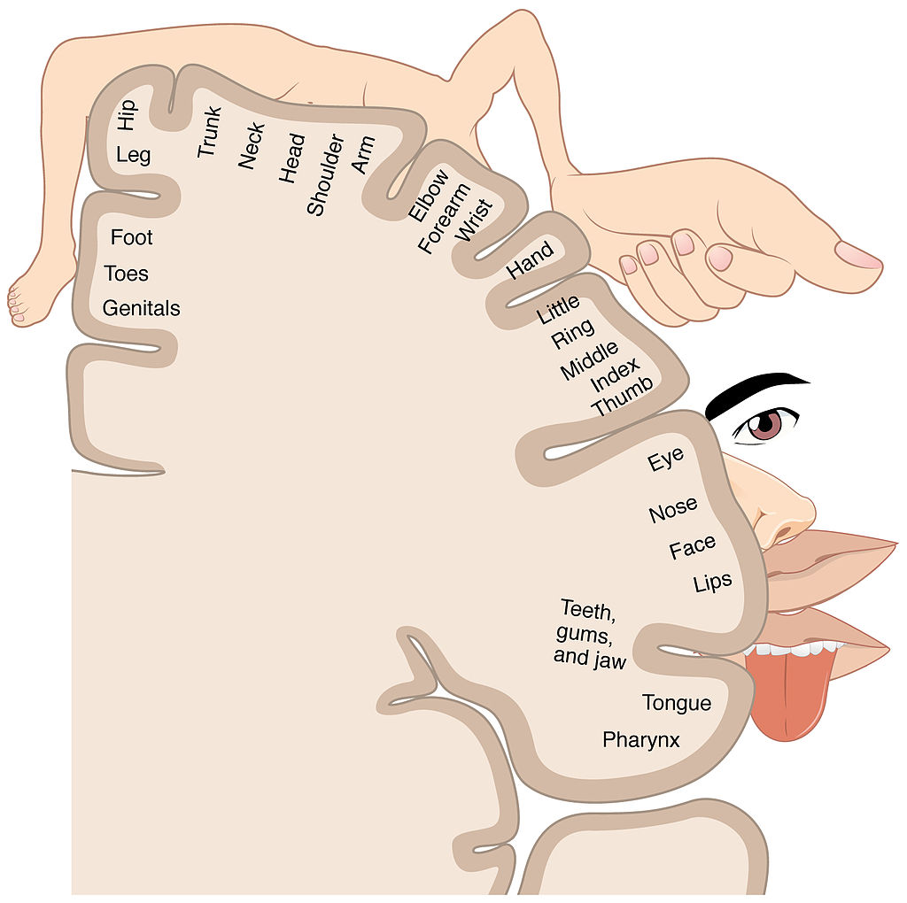

VibroGlove
Shantanu Bala
What can we do with technology?
After starting work nearly six years ago at the Center for Cognitive Ubiquitous Computing (CUbiC) at Arizona State University, I began exploring a pertinent question alongside a team of graduate students and professors: can we create haptic computer interfaces that can serve as assistive aids for people with visual disabilities?
Before I began research, I knew computing technologies had the capacity to empower people to perform tasks in ways that did not exist only decades ago. Our knowledge and memory is augmented by the the information retrieval technologies (Google) that allow us to search the Internet. Our social interactions are augmented by our ability to communicate asynchronously on multiple networks (Facebook, Twitter, etc.). In spite of the vast improvements we have made, I intuitively felt a gap between the technologies I used on a daily basis and the natural perceptual faculties of my mind and body.
Over time, why do we feel like we are adapting to technology? Can we design technology that adapts to our needs?
To address this question adequately, we cannot simply meet the needs of people on average – our market-driven technology industry already produces products targeted for mass adoption with uniformity. Instead, we must consider the aspects of individuals that make them unique. Further, we must also consider the capacity for our technologies to create a positive impact on each individual’s life, and use that capacity as the foundation for our future development efforts.
As I learned more about the work at CUbiC, I realized their mission aligned with my goals and thinking. CUbiC builds experimental person-centered technologies that assist people with rehabilitation from an injury and adjusting to a disability. Because no two people experience injury or disability in exactly the same way, the technologies must be adaptable to the needs of the user to be effective.
When we interact with the world around us, we utilize a combination of multiple streams of information that are instantaneously intercompared, synthesized, and analyzed by our brain. At any point, we only have awareness of the conscious interpretation projected by our brain onto the stimuli presented by our environment. When we interact with computers, the limitation of a computer screen and headphones stultifies our interactions by limiting its depth to two modalities: visual and auditory. While we can also taste, smell, and touch the real world, we can only see and hear the digital world.
In the realm of technology, the surface of human skin (capable of sensing, temperature, texture, and pressure simultaneously) remains relatively unexplored.
What can technology do for us?
I have never had a visual disability, and my understanding of visual disabilities roots itself in heavily-misinformed media and inaccurate historical depictions. After thinking about haptics and computer-generated tactile stimuli, I immediately considered the implications for someone with visual impairments – could we create a better version of Braille? Could we change the modality of human-computer interaction to revolve around touch feedback, circumventing the need for vision in the first place?
My initial thoughts were sugar-coated with a form of saviorism that I now detest. Who am I to tell a person who is blind or visually impaired that I can improve their life? At the time, I hadn’t even held a full conversation with someone who had a visual impairment! A few months quickly taught me an important lesson: before helping anyone, shut up and listen to them first.
A team of researchers before me did just that. After conducting two open-ended focus groups and a question-answer session with 16 persons who are blind, 9 with low vision, and 2 sighted specialists in the area of visual impairment, they identified the relative importance of eight different social needs for people with visual disabilities. Unlike my initial assumptions, using a computer or reading Braille already have viable solutions for a person with a visual disability – many of their challenges come from their social interactions with people who don’t share their disability. As a sighted person, I began to notice all of the subtle cues and gestures I naturally employ in a conversation or social situation to indicate my intentions. Many of these cues are visual, including eye contact, posture, nodding/shaking my head, hand gestures, and several other indicators on my body.
The rank-ordered social needs identified by the focus groups indicated that participants’ most important need corresponds to feedback on their own body mannerism and how it was affecting their social interactions. Following this was their need to access facial expressions, body mannerisms, identity, eye gaze, proxemics (location) and appearance of their social interaction partners. S. Krishna, D. Colbry, J. Black, V. Balasubramanian, and S. Panchanathan, “A Systematic Requirements Analysis and Development of an Assistive Device to Enhance the Social Interaction of People Who are Blind or Visually Impaired,” Workshop on Computer Vision Applications for the Visually Impaired (CVAVI 08), ECCV 2008.
The researchers were thinking more methodically than me: they had already taken the time to identify the needs of people with visual impairments before attempting to create any technology. With this understanding of the true impact that could be made with haptic technology, I began working with two graduate students at CUbiC, Sreekar and Troy.
Hardware Design
After brainstorming the ways we could provide additional context to the social interactions of a person with a visual disability, we decided to use vibrations on the skin to deliver tactile cues in place of the visual cues that take place in a conversation. Though we could provide sounds through headphones, a person with a visual impairment likely already uses their hearing to interact with people around them – we need not interfere with a reliable and useful sensory stream unless absolutely necessary.
Further, vibration motors are very simple to use and integrate into a prototype. Each individual pancake shaftless motor (eccentric rotating mass) costs less than a dollar, and functions similarly to any regular DC electric motor.
Our next design decision was a bit more complicated: where do we place the motors? To guide our design, we spent time learning about human physiology.

A representation of the Somatosensory Homunculus from the Wikimedia Commons.
{kind=link}
The Somatosensory Homunculus pictured above is a map of the body as it is represented in the brain (in the somatosensory cortex). The hands have a very large representation in the brain due to the larger number of tactile receptors on the surface of the skin around the palm and back of the hand. We also already use our hands to interact with computer interfaces – the idea of receiving tactile feedback on the hand already pervades most modern video games and mechanical computer interface designs (e.g. keyboard, mouse, etc.).
The location of vibrotactile motors on the hand.The anatomy of a human hand is naturally separated into fourteen different segments of each finger (phalanges), and we embedded a motor on the back of the a glove for each of the 14 bone segments that exist on human fingers. These fourteen motors were then controlled by a microcontroller (AtMega168) with a USB connection to provide detailed tactile sensations across the surface of the skin. Not only is the system reprogrammable and extensible, but the device can easily be repurposed for other applications: virtual reality, gaming, and Internet notifications, for example.
A picture of the VibroGlove with its labeled components.
Conveying Emotions
Nearly 65% of all human interpersonal communications happen through non-verbal cuesM.L. Knapp, Nonverbal Communication in Human Interaction, Harcourt College Pub, 1996.. In a conversation between two people, non-verbal cues provide an elegant means for delivery, interpretation and exchange of context for speech. For example, eye gaze, iconic body or hand gestures, and prosody enable effective and seamless role play in social interactions. People communicate so effortlessly through both verbal and non-verbal cues in their everyday social interactions that they do not realize the complex interplay of their voice, face and body in establishing a smooth communication channel. Nearly 72% of non-verbal communication N. Ambady and R. Rosenthal, “Thin Slices of Expressive behavior as Predictors of Interpersonal Consequences : a Meta-Analysis,” Psychological Bulletin, vol. 111, 1992, pp. 274, 256. takes place through visual cues encoded on the face and body of the interaction partners. Unfortunately, people who are blind or visually impaired cannot access this huge portion of interpersonal information independently.
The spectrum of emotions that can be conveyed visually through the human body supplies a high-bandwidth stream of information. Though we could ideally convey this information without any loss of detail, we decided to start by finding elegant abstractions for the possible emotional states of another person. Even by providing a little bit of extra context, we may augment social interactions to an extent that simplifies the process of adjusting to a visual disability.
Based on Paul Ekman’s research into the basic abstractions that can classify human emotional expression Basic Emotions book chapter, we decided to convey happiness, sadness, surprise, anger, fear, and disgust using haptic (vibrotactile) cues. We also created a vibrotactile pattern for a neutral expression in situations where a distinct emotional expression was not present. Since our device used 14 vibrotactile motors to convey the emotions, we designed spatio-temporal vibration patterns – patterns that created a sensation of movement across the skin over time. Unlike a cell phone or game controller that has a binary state (“vibrating” or “not vibrating”), our device was capable of delivering sensations of varied intensities across different parts of the hand over time.
Haptic Emoticons
On first examination, it appears that our senses are distinct sources of information – real-time channels that get pieced together within our conscious experience. However, our brain functions in an intuitively different manner from a computer. Unlike a computer that processes input from different sources to produce an output, our brain integrates our senses simultaneously (in parallel rather than sequentially). There is no clear separation between our sense of hearing, sight, taste, smell, or touch. Each sense influences the salience of information from another sense. When we perceive visual stimuli, we have associative machinery within our subconscious cognitive mechanisms that bring forward memories and sensations from our other sensory modalities.
An effective computer interface must take advantage of the mechanisms of the brain, and use the existing scaffolding of associations a user perceives when interacting with it. A typical graphical user interface performs a similar task: by organizing different applications into a visual space (“desktop”), each application intuitively corresponds to our associations with a physical space that can be rearranged to our liking.
Unlike audio-visual cues, tactile cues have only recently been studied with depth. To develop tactile representations of emotions, we decided to empirically test different approaches with a series of pilot studies and the guidance of a visually impaired collaborator.
The haptic representations of different emotions. Figures first published by the ACM.In order to represent the seven facial expressions, we designed haptic expression icons that were motivated by two important factors: 1) Icons similar to the visual emoticon that are already in popular use, like Happy, Sad, Surprise and Neutral, where the mouth shapes prominently represent the expression, and 2) Icons like Anger, Fear and Disgust where the mouth area alone does not convey the expression, thereby forcing us to create haptic icons that could evoke a sense of the expression in question. After extensive pilot testing, all 7 patterns were designed to be 750ms long with each motor vibrating for at least 50ms. These numbers were determined based on recall and recognition tasks designed to determine whether or not the participants could isolate vibrations. Participants experienced difficulty with any vibrotactile stimulation lasting less than 50 milliseconds Further, patterns longer than 800 milliseconds were considered to be too long by the participants, while patterns shorter than 600 milliseconds were confusing, and training accuracies were unacceptable.Krishna, S., Bala, S., McDaniel, T., McGuire, S., & Panchanathan, S. (2010, April). VibroGlove: an assistive technology aid for conveying facial expressions. In CHI’10 Extended Abstracts on Human Factors in Computing Systems (pp. 3637-3642). ACM.
For each of the emotions, we settled on tactile emoticons:
Happy is represented by a U shaped pattern.
Sad by an inverted U.
Surprise by a circle.
Neutral by a straight line.
Anger is represented by successive vibrations on six lower phalanges representing an open mouth showing its teeth during an expression of anger.
Fear is represented by very brief vibrations to the top phalanges (tips of the central fingers) in three quick successive vibration sequences representing a fast emotional response that people show towards fear.
Disgust is represented through a vibration pattern going from right to left on the bottom phalanges of the central fingers corresponding to a slightly opened mouth during the display of disgust.
Each of these tactile sensations relies on a movement of vibration across the hand over time – the combined sensation on a user’s skin forms the relevant emoticon.
Evaluating Effectiveness
There are two crucial variables that provide a measurement of the effectiveness of the emoticons for representing basic emotions during a conversation: 1) the average recognition accuracy for users when they are presented with each of the icons and 2) the average time a user takes to understand the denoted meaning of each tactile rhythm.
To conduct the experiment, we recruited one individual who is blind and 11 other participants who are sighted, but were blindfolded during the experiment. It is important to note that the individual who is blind had lost his sight after 25 years of having vision. To a large extent, this individual could correlate some of the haptic expression icons to his visual experiences from the past.
Once the participants wore the glove, they were seated in a chair with a blindfold and asked to keep their hand on their lap in the most comfortable position. They were first familiarized with all 7 vibration patterns by presenting them in order. At this time, we would present them with a haptic emoticon and tell them its meaning out loud. The familiarization was continued until the participants were comfortable in remembering all the seven emoticons. This was followed by the training phase in which all seven patterns were presented in random order, in multiple sets, and participants were asked to identify the expressions by depressing an appropriate key on a keyboard. We confirmed any correct response, and corrected incorrect responses. A 15 minute time limit was placed on the training irrespective of the training accuracy. The final testing phase was similar to the training phase except the experimenter did not provide feedback to participants, and each expression pattern was randomly presented 10 times making a total of 70 trials. The subjects were given 5 seconds per trial to respond.
The results of the experiment demonstrate the potential for the VibroGlove to be used as an assistive social aid. Sighted participants had between 86% and 98% accuracy recognizing the vibrotactile cues presented during the experiment. The blind participant was able to recognize every haptic emoticon with 100% accuracy except for the “surprise” icon (“surprise” was recognized with 90% accuracy). These initial results were also published in the proceedings of the 2010 ACM Conference on Human Factors in Computing Systems VibroGlove: An Assistive Technology Aid for Conveying Facial Expressions. Additionally, we conducted a more detailed analysis that explored the differences in recognition rates based on the spatial characteristics of each pattern. The additional analysis was published in the proceedings of the 2010 IEEE Haptic Audio-Visual Environments and Games conference Exploring the Dorsal Surface of the Fingers for Visuo-Haptic Sensory Substitution.
After designing the VibroGlove and conducting the experiment, we decided to pursue the research question in more depth. You can read in more detail Can we convey visual expressions of emotion with more detail? How can we increase the resolution of the device? Can we improve usability and accuracy? Our future work attempts to address these questions and expand on the work in more detail. In the meantime, we also have a demonstration of the device integrated with a face-tracking USB camera Dyadic Interaction Assistant for Tracking Head Gestures and Facial Expressions.